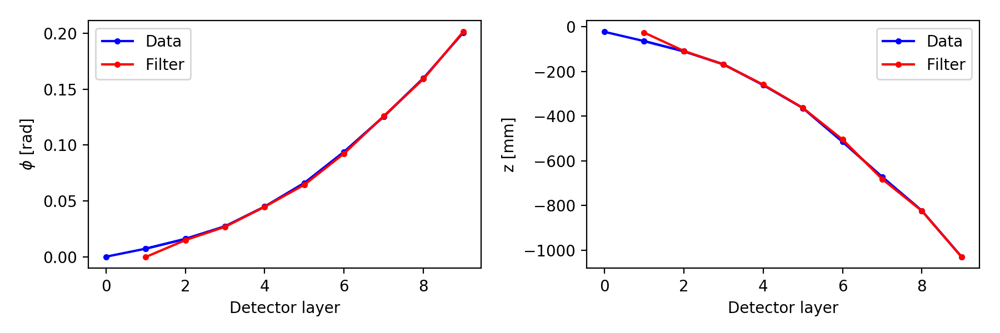
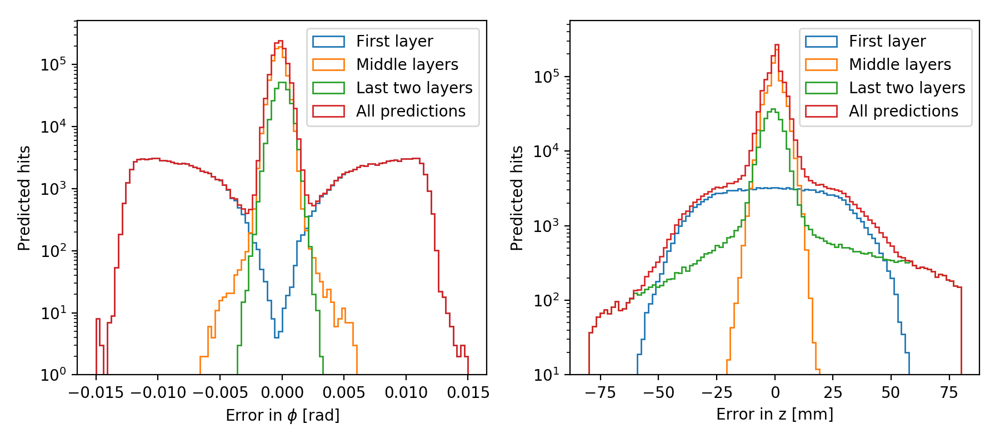
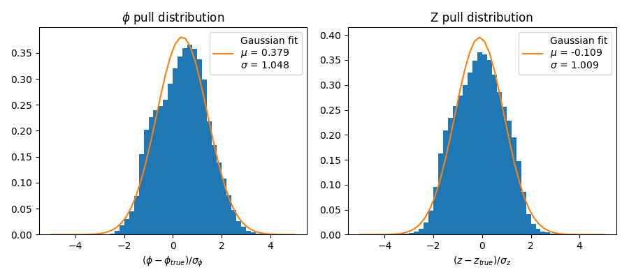
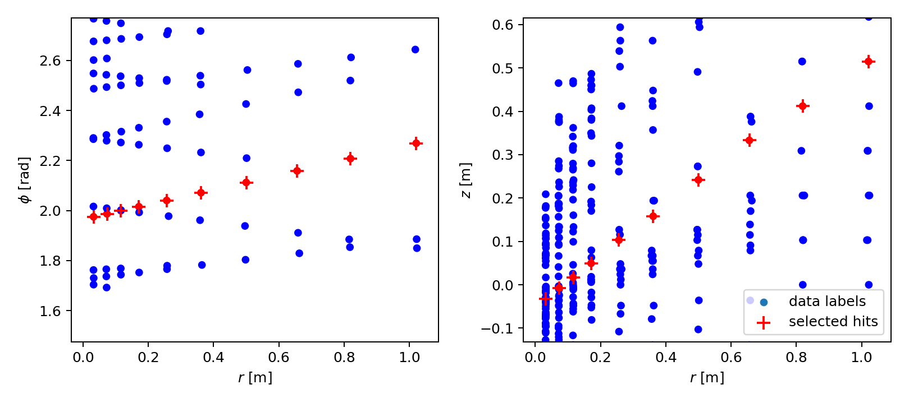
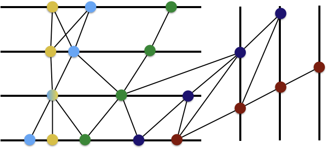
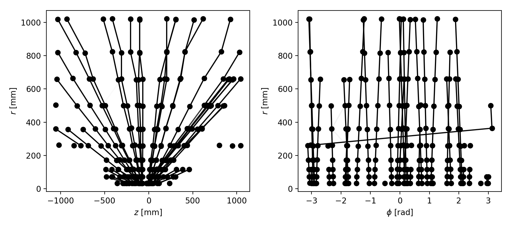

Novel deep learning methods for track reconstruction
B-Lunch Talk
Slides
Deep learning, the future of track reconstruction?
- HL-LHC: expected pileup of 200, with O(10k) particles and O(100k) hits
- existing track finding (combinatorial seed finding and track buidling) struggles
- scales badly with \(O(N^2)\) or worse
- inherently serial
- new HEP.TrkX project: explore, whether machine learning can help
- models non-linear dependencies
- learn effective representations on high-dimensional data through training
- parallizes easily, e.g. on GPU's
Initial idea: Borrow from image recognition
- deep learning has been applied very successfully computer vision and image recognition
- fixed number of features, aligned in euclidean grid
- learn higher order features via convolutional neural networks
- first approach: use image-like representation of tracking data Farrell:2017ifc

Back to space points
- image recognition algorithms don't scale to realistic HL-LHC conditions with high dimensionality and sparsity
- loss of information due to image representation
- real detector geometries not "grids"
- → need algorithms which can use the full precision of 3D space points ("hits")
- two candidates:
- Recurrent neural networks (RNN's)
- Graph neural networks (GNN's)
Hit Prediction with recurrent neural networks
- RNN's useful for predicting/classifying the next item in a sequence, when it depends on the previous items
- e.g. very successfully applied prediction of next word, speech recognition etc.
./figures/Recurrent_neural_network_unfold.pdf
- based on previous hits in sequence, predict next one (regression)
- architecture: long short-term memory (LSTM) layer and fully conctected (FC) layer
- trained with mean-squared-error loss function

Interlude: data used for tests
- MC data from ACTS 1742-6596-898-4-042011 with "generic" HL-LHC detector (image below)
- events with one hard QCD scattering process and an avarage of 10 soft QCD pileup interactions
- only tracks with \(p > \SI{1}{\GeV}\)
- require that all barrel 10 layers are hit, remove duplicate layer hits

Results of simple hit predictor
- prediciton of next hit for example track

- residual distributions

Gaussian model
- outputs are gaussians PDF's with mean \(\hat{\vec{r}}\) and covariance \(\Sigma\)
- trained with max. log-likelihood loss function \(L(r, \hat{r}, \Sigma) = \log|\Sigma| + (r-\hat{r})^T \Sigma^{-1} (r-\hat{r})\)
- learns to predict own uncertainty
- important for scoring hits candidates in candidates
- intrinsic to Kalman filter

Gaussian model results
- predictions of gaussian model for example track

- pull-distribution: good prediction, but non-gaussian features

Track building proof-of-concept
- simple topology: no B-field, low-occupancy, particle-gun
- seed of three true hits
- predict next hit with RNN, select closest measured hit to track

- combinatorial tree search algorithm needed for proper tracking
(like CKF with RNN instead of Kalman)
Graph Neural Networks (GNN's)
- part of Geometric Deep Learning Bronstein:2016thv: exploit true geometry of problem domain instead of euclidean grid approach
- represent hits (space points) as nodes in graph
- connections (edges) can be restricted with geometric constraints/preprocessing
- two applications developed
- hit classification: Which nodes belong to some track?
- segment classification: Which edges correspond to same-track hits?

Used GNN architecture
Graph hit classification
- starting from seed (three true hits), classify other hits whether they belong to track
- ideally, find all hits of single true track
- graph construction
- take four hits in each layer around true track
- connect all hits on adjacent layers
- use seven graph iterations with one final node classification layer

Hit classification results
- 99.2% purity, 97.9% efficiency, 99.4% accuracy
- ROC-Curve: excellent separation


Segment classification
- classify edges, whether they connect two hits of same track
- graph construction
- \(\ang{45}\) cut on \(\phi\)
- \(\SI{300}{\mm}\) cut on z
- use four graph iterations and one final application of edge network

Segment classification results
- 99.5% purity, 98.7% efficiency, 99.5O% accuracy
- ROC-Curve: excellent separation


Summary
- two methods to apply deep learning to tracking with exact space point hit presentations
- Recurrent Neural Networks similar to Kalman filter, use for track following
- Graph Neural Networks learn graph presentation of hit data
- excellent results on toy data make hope that they scale for more realistic data
- "most promising" deep learning solution to address HL-LHC tracking challenge
- TODO
- built RNN into combinatorial track tree search akin to CKF and test track-building with full-occupancy data
- turn the GNN's into actual track finders, also scale up to realistic data
References and Further reading
Bibliography
- [Farrell:2017ifc] "Farrell & others", The HEP.TrkX Project: deep neural networks for HL-LHC online and offline tracking, "EPJ Web Conf.", 150, 00003 (2017). doi.
- [1742-6596-898-4-042011] C Gumpert, A Salzburger, M Kiehn, J Hrdinka, N Calace, ATLAS & Collaboration, ACTS: from ATLAS software towards a common track reconstruction software, Journal of Physics: Conference Series, 898(4), 042011 (2017). link.
- [Bronstein:2016thv] "Bronstein, Bruna, LeCun, Szlam, & Vandergheynst, Geometric Deep Learning: Going beyond Euclidean data, "IEEE Sig. Proc. Mag.", 34(4), 18-42 (2017). doi.
- [Farrell2:2018cjr] "Farrell & others", Novel deep learning methods for track reconstruction, in in: "4th International Workshop Connecting The Dots 2018 (CTD2018) Seattle, Washington, USA, March 20-22, 2018", edited by (2018)